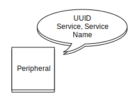
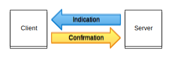
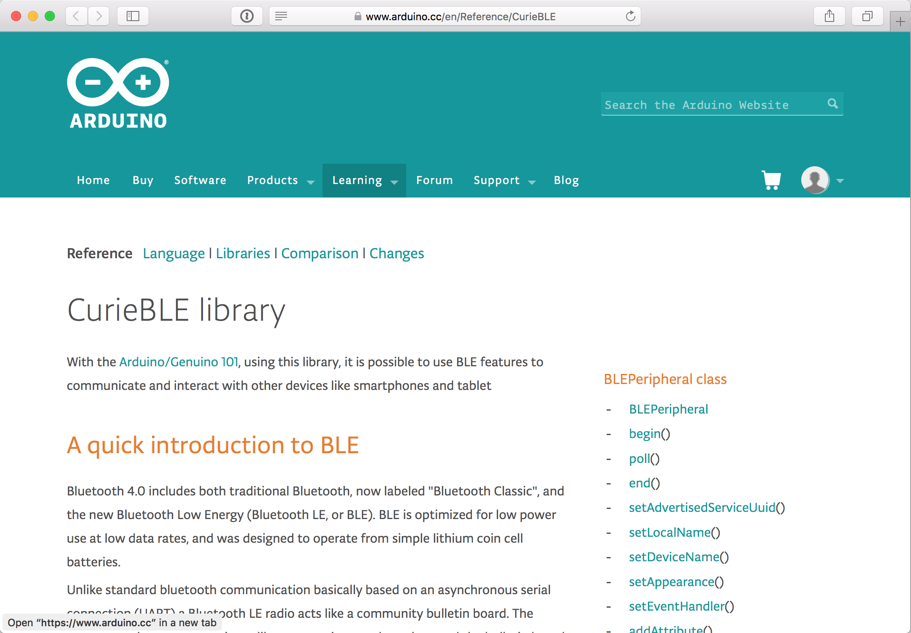

Bluetooth LE
ITP | Week 2 | February 3, 2017
Don Coleman


Lightbulb Service - FF10

Advertising

Connect


Read Value

Write Value

Write Command

Heart Rate Service - 180d
 org.bluetooth.service.heart_rate.xml
org.bluetooth.service.heart_rate.xmlorg.bluetooth.characteristic.heart_rate_measurement.xml
Notification

Indication
Peripheral
Provides services
Central
Uses services on a peripheral
Today we'll build peripherals that
- Control a LED
- Send button state
- Send temperature data
Arduino 101 - CurieBLE
https://www.arduino.cc/en/Reference/CurieBLE
Arduino BLE Peripheral

https://github.com/sandeepmistry/arduino-BLEPeripheral
CurieBLE / Arduino 101
#include <CurieBLE.h>
BLEPeripheral library
#include <BLEPeripheral.h>
Exercise 1
Blink

Blink.ino
#define LED_PIN 6
void setup() {
pinMode(LED_PIN, OUTPUT);
}
void loop() {
digitalWrite(LED_PIN, HIGH); // turn the LED on
delay(1000); // wait one second
digitalWrite(LED_PIN, LOW); // turn the LED off
delay(1000); // wait one second
}
Exercise 2
Bluetooth LED
Lightbulb Service - FF10

LED.ino
#include <CurieBLE.h>
#define LED_PIN 6
Create BLE Peripheral
BLEPeripheral blePeripheral;
Some boards need pins defined
#define BLE_REQ 9
#define BLE_RDY 8
#define BLE_RST 5
BLEPeripheral blePeripheral =
BLEPeripheral(BLE_REQ, BLE_RDY, BLE_RST);
Create Service
BLEService ledService = BLEService("FF10");
Characteristic & Descriptor
BLECharCharacteristic switchCharacteristic
= BLECharCharacteristic("FF11", BLERead | BLEWrite);
BLEDescriptor switchDescriptor
= BLEDescriptor("2901", "Switch");
Setup
void setup() {
Serial.begin(9600);
pinMode(LED_PIN, OUTPUT);
blePeripheral.addAttribute(ledService);
blePeripheral.addAttribute(switchCharacteristic);
blePeripheral.addAttribute(switchDescriptor);
// ...
}
Setup
void setup() {
// ...
switchCharacteristic.setEventHandler(
BLEWritten, switchCharacteristicWritten);
blePeripheral.setAdvertisedServiceUuid(
ledService.uuid());
blePeripheral.setLocalName("LED");
blePeripheral.begin();
}
Loop
void loop() {
blePeripheral.poll();
}
Switch Characteristic Written
void switchCharacteristicWritten(
BLECentral& central,
BLECharacteristic& characteristic) {
if (switchCharacteristic.value()) {
Serial.println(F("LED on"));
digitalWrite(LED_PIN, HIGH);
} else {
Serial.println(F("LED off"));
digitalWrite(LED_PIN, LOW);
}
}
Local Name vs Device Name
What is the difference?
void setup() {
// In Advertising Data 0x09
blePeripheral.setLocalName("LOCAL NAME");
// Generic Access Service 0x1800, 0x2A00
blePeripheral.setDeviceName("DEVICE NAME");
// ...
}

Local Name is 0x09 in Advertising Data
The Generic Access Service 0x1800 contains
the Device Name Characteristic 0x2A00
Exercise 3
Dimmable LED
Lightbulb Service - FF10
Characteristic & Descriptor
BLEUnsignedCharCharacteristic dimmerCharacteristic
= BLEUnsignedCharCharacteristic("FF12",
BLERead | BLEWrite);
BLEDescriptor dimmerDescriptor
= BLEDescriptor("2901", "Dimmer");
Setup
void setup() {
// ...
blePeripheral.addAttribute(dimmerCharacteristic);
blePeripheral.addAttribute(dimmerDescriptor);
// ...
dimmerCharacteristic.setEventHandler(
BLEWritten, dimmerCharacteristicWritten);
// ...
}
Dimmer Characteristic Written
void dimmerCharacteristicWritten(
BLECentral& central,
BLECharacteristic& characteristic) {
Serial.print(F("Dimmer set to: "));
Serial.println(dimmerCharacteristic.value());
analogWrite(LED_PIN, dimmerCharacteristic.value());
}
Exercise 4
Button
Button Service - FFE0


Service, Characteristic, & Descriptor
BLEService buttonService = BLEService("FFE0");
BLECharCharacteristic buttonCharacteristic =
BLECharCharacteristic("FFE1", BLENotify);
BLEDescriptor buttonDescriptor =
BLEDescriptor("2901", "Button State");
Loop
void loop() {
blePeripheral.poll();
char buttonValue = digitalRead(BUTTON_PIN);
if (buttonCharacteristic.value() != buttonValue) {
Serial.print("Button ");
Serial.println(buttonValue, HEX);
buttonCharacteristic.setValue(buttonValue);
}
}
Button v2
Limit Button Read
void loop() {
blePeripheral.poll();
// limit how often we read the button
if (millis() - lastReadTime > readInterval) {
readButton();
lastReadTime = millis();
}
}
Read Button
void readButton() {
char buttonValue = digitalRead(BUTTON_PIN);
// has the value changed since the last read?
if (buttonCharacteristic.value() != buttonValue) {
Serial.print("Button ");
Serial.println(buttonValue, HEX);
buttonCharacteristic.setValue(buttonValue);
}
}
Exercise 5
Thermometer
Thermometer Service - 0xBBB0


Analog Temperature Sensor TMP36

Service, Characteristic, & Descriptor
BLEService thermometerService = BLEService("BBB0");
BLEFloatCharacteristic temperatureCharacteristic
= BLEFloatCharacteristic("BBB1",
BLERead | BLENotify);
BLEDescriptor temperatureDescriptor
= BLEDescriptor("2901", "degrees C");
Loop
void loop()
{
blePeripheral.poll();
if(millis() - previousMillis > interval) {
pollTemperatureSensor();
previousMillis = millis();
}
}Poll Temperature Sensor
void pollTemperatureSensor()
{
float temp = calculateTemperature();
if (tempCharac.value() != temp) {
tempCharac.setValue(temp);
Serial.println(temp);
}
}
Calculate Temperature
float calculateTemperature()
{
// read the sensor value
int sensorValue = analogRead(TEMPERATURE_PIN);
// 3.3V logic, 10-bit ADC
float voltage = sensorValue * 3.3 / 1024.0;
// 100 degrees per volt with 0.5 volt offset
float temperature = (voltage - 0.5) * 100;
return temperature;
}Don Coleman
dc159@nyu.eduhttp://don.github.io/slides/2016-02-05-itp-bluetoothle

NYU ITP Bluetooth Spring 2017 Week 2 by Don Coleman is licensed under a Creative Commons Attribution 4.0 International License.